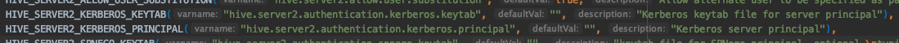

很遗憾，CDH版本的Spark阉割了Thrift Server。（可能与自家产品Impala有竞争关系的原因。）
参考 https://docs.cloudera.com/documentation/enterprise/6/6.3/topics/spark.html#spark__d99299e107
# ll /opt/cloudera/parcels/CDH/lib/spark/sbin/
total 84
-rwxr-xr-x 1 root root 2803 Nov 9 00:05 slaves.sh
-rwxr-xr-x 1 root root 1429 Nov 9 00:05 spark-config.sh
-rwxr-xr-x 1 root root 5689 Nov 9 00:05 spark-daemon.sh
-rwxr-xr-x 1 root root 1262 Nov 9 00:05 spark-daemons.sh
-rwxr-xr-x 1 root root 1190 Nov 9 00:05 start-all.sh
-rwxr-xr-x 1 root root 1274 Nov 9 00:05 start-history-server.sh
-rwxr-xr-x 1 root root 2050 Nov 9 00:05 start-master.sh
-rwxr-xr-x 1 root root 1877 Nov 9 00:05 start-mesos-dispatcher.sh
-rwxr-xr-x 1 root root 1423 Nov 9 00:05 start-mesos-shuffle-service.sh
-rwxr-xr-x 1 root root 1279 Nov 9 00:05 start-shuffle-service.sh
-rwxr-xr-x 1 root root 3151 Nov 9 00:05 start-slave.sh
-rwxr-xr-x 1 root root 1527 Nov 9 00:05 start-slaves.sh
-rwxr-xr-x 1 root root 1478 Nov 9 00:05 stop-all.sh
-rwxr-xr-x 1 root root 1056 Nov 9 00:05 stop-history-server.sh
-rwxr-xr-x 1 root root 1080 Nov 9 00:05 stop-master.sh
-rwxr-xr-x 1 root root 1227 Nov 9 00:05 stop-mesos-dispatcher.sh
-rwxr-xr-x 1 root root 1084 Nov 9 00:05 stop-mesos-shuffle-service.sh
-rwxr-xr-x 1 root root 1067 Nov 9 00:05 stop-shuffle-service.sh
-rwxr-xr-x 1 root root 1557 Nov 9 00:05 stop-slave.sh
-rwxr-xr-x 1 root root 1064 Nov 9 00:05 stop-slaves.sh
可见，没有Thrift Server的启动脚本。
借鉴网上资料（CDH 6成功启动spark-thrift服务 https://blog.csdn.net/qq_34864753/article/details/102729859），在不修改CDH Spark的前提下，我们需要启动一个独立的Spark Thrift Server。
还需要考虑CDH Kerberos认证的问题。
Spark Thrift Server 简介
Spark Thrift Server是Spark社区基于HiveServer2实现的一个Thrift服务。旨在无缝兼容HiveServer2。
因为Spark Thrift Server的接口和协议都和HiveServer2完全一致，因此我们部署好Spark Thrift Server后，可以直接使用hive的beeline访问Spark Thrift Server执行相关语句。
Spark Thrift Server的目的也只是取代HiveServer2，因此它依旧可以和Hive Metastore进行交互，获取到hive的元数据。
参考 https://www.jianshu.com/p/b719c6415411
Apache Spark配置
下载官方版本
cd /opt
wget https://archive.apache.org/dist/spark/spark-2.4.0/spark-2.4.0-bin-hadoop2.7.tgz
cd spark-2.4.0-bin-hadoop2.7 && ln -s `pwd` /opt/spark
Spark配置文件
通过软链接的方式复用Hive的配置。
ln -s /etc/hive/conf/hive-site.xml /opt/spark/conf/hive-site.xml
最后配置文件夹长这样。
# ll /opt/spark/conf/
-rw-r--r-- 1 webapp webapp 996 Oct 29 2018 docker.properties.template
-rw-r--r-- 1 webapp webapp 1105 Oct 29 2018 fairscheduler.xml.template
lrwxrwxrwx 1 root root 28 Apr 9 11:05 hive-site.xml -> /etc/hive/conf/hive-site.xml
-rw-r--r-- 1 webapp webapp 2025 Oct 29 2018 log4j.properties.template
-rw-r--r-- 1 webapp webapp 7801 Oct 29 2018 metrics.properties.template
-rw-r--r-- 1 webapp webapp 865 Oct 29 2018 slaves.template
-rw-r--r-- 1 webapp webapp 1292 Oct 29 2018 spark-defaults.conf.template
-rwxr-xr-x 1 webapp webapp 4221 Oct 29 2018 spark-env.sh.template
Spark配置文件配置方式
- 默认配置路径：
$SPARK_HOME/conf，如果$SPARK_HOME不存在，脚本中会把脚本上层目录当做$SPARK_HOME。 $SPARK_CONF_DIR，可以指定SPARK配置文件夹。- Spark classpath，如果
hdfs-site.xmlcore-site.xml在classpath，Spark可以读取。 $HADOOP_CONF_DIR，一般是/etc/hadoop/conf目录，读Hadoop配置信息。$YARN_CONF_DIR，一般也是/etc/hadoop/conf目录。- 命令行中可以覆盖以上配置文件中的具体参数。
参考 https://spark.apache.org/docs/latest/configuration.html#inheriting-hadoop-cluster-configuration
Spark lib修改
cd /opt/spark
rm -rf jars/hadoop-yarn-*
cp /opt/cloudera/parcels/CDH-6.3.2-1.cdh6.3.2.p0.1605554/jars/hadoop-yarn-* jars/
cp /opt/cloudera/parcels/CDH-6.3.2-1.cdh6.3.2.p0.1605554/jars/hive-shims-scheduler-2.1.1-cdh6.3.2.jar jars/
Kerberos 认证
- 图中的三个角色，在Kerkeros认证体系下都对应一个principal。Kerberos principal相当于用户名，keytab相当于密码。权限配置，依靠hive与hdfs本身。
- JDBC客户端与Spark JDBC Server需要使用Kerberos认证。JDBC客户端需要拥有principal/keytab对。我们手动创建。
- Spark JDBC Server与Hive metastore需要使用Kerberos认证。JDBC服务端需要拥有principal/keytab对。我们手动创建。
- Hive metastore也拥有自己的principal/keytab对，不过这个已经由CDH托管了。
常见Kerberos错误：
- org.apache.hive.service.ServiceException: Unable to login to kerberos with given principal/keytab / Caused by: java.io.IOException: HiveServer2 Kerberos principal or keytab is not correctly configured
- Caused by: java.io.IOException: Login failure for hive/xh-hd2-peggy-dost000003@PEGGY.LING from keytab hive.keytab: javax.security.auth.login.LoginException: Unable to obtain password from user
- SASL negotiation failure javax.security.sasl.SaslException: GSS initiate failed [Caused by GSSException: No valid credentials provided (Mechanism level: Failed to find any Kerberos tgt)]
创建 Spark JDBC Server 的 Principal
因为复用了Hive的配置文件，待创建的principal的名字需要满足配置中的规范。
[webapp@xh-hd2-peggy-dost000004 spark]$ cat conf/hive-site.xml
...
<property>
<name>hive.server2.authentication.kerberos.principal</name>
<value>hive/_HOST@PEGGY.LING</value>
</property>
...
在Kerberos服务器创建 principal及导出 keytab，同步到Spark JDBC Server所在机器。
# create principal
kadmin.local addprinc -randkey hive/xh-hd2-peggy-dost000004
# export keytab
kadmin.local ktadd -k hive.xh-hd2-peggy-dost000004.keytab hive/xh-hd2-peggy-dost000004
# 验证是否OK
kinit -kt hive.xh-hd2-peggy-dost000004.keytab hive/xh-hd2-peggy-dost000004@PEGGY.LING
启动 Spark JDBC Server
启动脚本如下。因为配置文件里没有指定keytab的路径，需要通过--hiveconf指定。
#!/usr/bin/bash
export JAVA_HOME=/usr/java/jdk1.8.0_181-cloudera
export PATH=$PATH:$JAVA_HOME/bin
export HADOOP_CONF_DIR=/etc/hadoop/conf
kinit -kt hive.xh-hd2-peggy-dost000004.keytab hive/xh-hd2-peggy-dost000004@PEGGY.LING
sbin/start-thriftserver.sh \
--hiveconf hive.server2.authentication.kerberos.keytab hive.xh-hd2-peggy-dost000004.keytab
也可以参考这篇文章：
Configuring Spark Thrift Server with Kerberos https://mapr.com/docs/61/Spark/ConfiguringSparkSQLThriftServer_Kerberos.html
kinit ticket过期问题
Spark Thrift Server 进程会自动处理Kerberos ticket renewal操作。
默认的ticket_lifetime 1d，renew_lifetime 7d。上次kinit是04/10。
[webapp@xh-hd2-peggy-dost000004 spark]$ klist
Ticket cache: FILE:/tmp/krb5cc_1000
Default principal: hive/xh-hd2-peggy-dost000004@PEGGY.LING
Valid starting Expires Service principal
04/13/2020 01:32:45 04/14/2020 01:32:45 krbtgt/PEGGY.LING@PEGGY.LING
renew until 04/17/2020 15:56:45
就看7天后会怎么样了。renew周期过了，会重建么？理论上是可以的。
看到Spark代码中已经有kerberos集成了，包括登录啥的。
spark/sql/hive-thriftserver/v2.3.5/src/main/java/org/apache/hive/service/auth/HiveAuthFactory.java


创建 JDBC Client 的 Principal
在Kerberos服务器创建 principal及导出 keytab，同步到 JDBC Client 所在机器。这里对principal的名称没有严格要求。
# create principal
kadmin.local addprinc -randkey hive/xh-hd2-peggy-dost000003
# export keytab
kadmin.local ktadd -k hive.xh-hd2-peggy-dost000003.keytab hive/xh-hd2-peggy-dost000003
# 验证是否OK
kinit -kt hive.xh-hd2-peggy-dost000003.keytab hive/xh-hd2-peggy-dost000003@PEGGY.LING
启动 JDBC Client
[webapp@xh-hd2-peggy-dost000003 spark]$ kinit -kt hive.xh-hd2-peggy-dost000003.keytab hive/xh-hd2-peggy-dost000003@PEGGY.LING
[webapp@xh-hd2-peggy-dost000003 spark]$ bin/beeline -u "jdbc:hive2://xh-hd2-peggy-dost000004:10000/default;principal=hive/xh-hd2-peggy-dost000004@PEGGY.LING"
Connecting to jdbc:hive2://xh-hd2-peggy-dost000004:10000/default;principal=hive/xh-hd2-peggy-dost000004@PEGGY.LING
2020-04-10 16:09:01 INFO Utils:310 - Supplied authorities: xh-hd2-peggy-dost000004:10000
2020-04-10 16:09:01 INFO Utils:397 - Resolved authority: xh-hd2-peggy-dost000004:10000
2020-04-10 16:09:01 INFO HiveConnection:203 - Will try to open client transport with JDBC Uri: jdbc:hive2://xh-hd2-peggy-dost000004:10000/default;principal=hive/xh-hd2-peggy-dost000004@PEGGY.LING
Connected to: Spark SQL (version 2.4.0)
Driver: Hive JDBC (version 1.2.1.spark2)
Transaction isolation: TRANSACTION_REPEATABLE_READ
Beeline version 1.2.1.spark2 by Apache Hive
0: jdbc:hive2://xh-hd2-peggy-dost000004:10000> show databases;
+---------------+--+
| databaseName |
+---------------+--+
| db1 |
| default |
| product |
+---------------+--+
3 rows selected (0.091 seconds)
至此，Thrift Server的启用就完成了。
YARN 运行
失败了，TODO
sbin/start-thriftserver.sh --hiveconf hive.server2.authentication.kerberos.keytab hive.keytab --hiveconf hive.server2.thrift.port=10001 --queue root.zm_yarn_pool.development --master yarn --executor-memory 4g --executor-cores 2 --num-executors 20
2020-04-09 17:56:19 INFO Client:54 - Requesting a new application from cluster with 5 NodeManagers
Exception in thread "main" java.lang.NoClassDefFoundError: org/apache/hadoop/util/FastNumberFormat
at org.apache.hadoop.yarn.api.records.ApplicationId.toString(ApplicationId.java:104)
at org.apache.spark.deploy.yarn.Client$.org$apache$spark$deploy$yarn$Client$$getAppStagingDir(Client.scala:1222)
at org.apache.spark.deploy.yarn.Client.org$apache$spark$deploy$yarn$Client$$cleanupStagingDirInternal$1(Client.scala:206)
at org.apache.spark.deploy.yarn.Client.cleanupStagingDir(Client.scala:226)
at org.apache.spark.deploy.yarn.Client.submitApplication(Client.scala:191)
at org.apache.spark.scheduler.cluster.YarnClientSchedulerBackend.start(YarnClientSchedulerBackend.scala:57)
at org.apache.spark.scheduler.TaskSchedulerImpl.start(TaskSchedulerImpl.scala:178)
at org.apache.spark.SparkContext.<init>(SparkContext.scala:501)
at org.apache.spark.SparkContext$.getOrCreate(SparkContext.scala:2520)
at org.apache.spark.sql.SparkSession$Builder$$anonfun$7.apply(SparkSession.scala:935)
at org.apache.spark.sql.SparkSession$Builder$$anonfun$7.apply(SparkSession.scala:926)
at scala.Option.getOrElse(Option.scala:121)
【外传】CDH是如何管理Hadoop配置文件的
以下结果都是通过观察实践所得。
以Hive为例，/etc/hive/conf下的配置文件由CDH生成。（CDH管理界面上可以修改这些配置。）
# ll /etc/hive/conf/
total 64
-rw-r--r-- 1 root root 21 Dec 31 15:02 __cloudera_generation__
-rw-r--r-- 1 root root 70 Dec 31 15:02 __cloudera_metadata__
-rw-r--r-- 1 root root 3846 Dec 31 15:02 core-site.xml
-rw-r--r-- 1 root root 617 Dec 31 15:02 hadoop-env.sh
-rw-r--r-- 1 root root 3839 Dec 31 15:02 hdfs-site.xml
-rw-r--r-- 1 root root 2655 Dec 31 15:02 hive-env.sh
-rw-r--r-- 1 root root 6925 Dec 31 15:02 hive-site.xml
...
# head /etc/hive/conf/hive-site.xml
<?xml version="1.0" encoding="UTF-8"?>
<!--Autogenerated by Cloudera Manager-->
<configuration>
<property>
<name>hive.metastore.uris</name>
<value>thrift://xh-hd2-peggy-dost001:9083</value>
</property>
<property>
<name>hive.metastore.client.socket.timeout</name>
我们的集群是开启了Kerberos认证的。但是上述配置文件里没见principal的keytab路径配置。
# grep keytab /etc/hive/conf/hive-site.xml
也就是说，/etc/hive/conf不是真正在被使用的配置文件。
/var/run/cloudera-scm-agent/process/ 这个目录中有所有CDH监控的进程，包括我们关注的Hive进程。
参考 https://community.cloudera.com/t5/Support-Questions/Location-of-keytab-files/td-p/33716
# ls /var/run/cloudera-scm-agent/process/*hive*
/var/run/cloudera-scm-agent/process/954-hive-HIVEMETASTORE:
cloudera-monitor.properties config.zip creds.localjceks hdfs-site.xml hive-log4j2.properties logs redaction-rules.json service-metrics.properties supervisor_status
cloudera-stack-monitor.properties core-site.xml exit_code hive.keytab hive-site.xml proc.json sentry-site.xml supervisor.conf yarn-conf
/var/run/cloudera-scm-agent/process/955-hive-HIVESERVER2:
cloudera-monitor.properties config.zip exit_code hdfs-site.xml hive-log4j2.properties logs navigator.lineage.client.properties redaction-rules.json service-metrics.properties supervisor.conf yarn-conf
cloudera-stack-monitor.properties core-site.xml fair-scheduler.xml hive.keytab hive-site.xml navigator.client.properties proc.json sentry-site.xml spark-defaults.conf supervisor_status
/var/run/cloudera-scm-agent/process/956-hive-WEBHCAT:
cloudera-monitor.properties config.zip exit_code hive-site.xml logs redaction-rules.json supervisor.conf webhcat-default.xml webhcat-site.xml
cloudera-stack-monitor.properties core-site.xml hdfs-site.xml HTTP.keytab proc.json service-metrics.properties supervisor_status webhcat-log4j.properties yarn-conf
这里Hive有三个进程，metastore，hiveserver2，WEBHCAT。可见principal对应的keytab，这里的 hive.keytab，也是在这里维护着。配置文件也是在/etc/hive/conf基础上作了改动，比如keytab路径的设置。
[root 954-hive-HIVEMETASTORE]# grep kerberos hive-site.xml
<name>hive.metastore.kerberos.principal</name>
<name>hive.metastore.kerberos.keytab.file</name>
<value>kerberos</value>
[root 955-hive-HIVESERVER2]# grep kerberos hive-site.xml
<value>kerberos</value>
<name>hive.metastore.kerberos.principal</name>
<name>hive.server2.authentication.kerberos.principal</name>
<name>hive.server2.authentication.kerberos.keytab</name>
HiveMetaStore与HiveServer2使用的keytab是不同的。一个principal对应多个keytab么？TODO：可能是因为加密随机的原因？？？
[root@xh-hd2-peggy-dost001 955-hive-HIVESERVER2]# md5sum hive.keytab
523357eec4f542b7b3df7ec52cee43b2 hive.keytab
[root@xh-hd2-peggy-dost001 954-hive-HIVEMETASTORE]# md5sum hive.keytab
3c6f52333067518ae4bdce1e99878857 hive.keytab
TODO：实验发现，导出两次，之前的keytab就失效了！进入知识盲区。
[root@xh-hd2-peggy-rost01 ~]# kadmin.local addprinc -randkey hive/xh-hd2-peggy-dost000003
[root@xh-hd2-peggy-rost01 ~]# kadmin.local ktadd -k hive.xh-hd2-peggy-dost000003.keytab hive/xh-hd2-peggy-dost000003
[root@xh-hd2-peggy-rost01 ~]# mv hive.xh-hd2-peggy-dost000003.keytab hive.xh-hd2-peggy-dost000003.keytab.bak
[root@xh-hd2-peggy-rost01 ~]# kadmin.local ktadd -k hive.xh-hd2-peggy-dost000003.keytab hive/xh-hd2-peggy-dost000003
[root@xh-hd2-peggy-rost01 ~]# kinit -kt hive.xh-hd2-peggy-dost000003.keytab hive/xh-hd2-peggy-dost000003@PEGGY.LING
[root@xh-hd2-peggy-rost01 ~]# kinit -kt hive.xh-hd2-peggy-dost000003.keytab.bak hive/xh-hd2-peggy-dost000003@PEGGY.LING
kinit: Password incorrect while getting initial credentials
Last modified on 2020-04-10